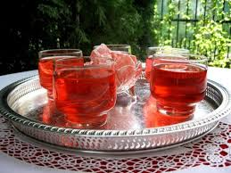

Aranxhata Të gjithë ata që kanë provuar arançatat e famshme,tregojnë për shijen e mirë të këtij produkti. Bëhet fjalë për pijen që gjithë fëmijët e donin aq shumë para viteve ‘90. Ngaqë nuk kishin pije tjetër, apo ngaqë ishte shumë e mirë, kjo mbetet ende në dilemë. Arançata kishte në përbërje vetëm ujë, aromë, ngjyrues ushqimor dhe gaz. Ishte dy llojesh, me aromë pjepri dhe kishte ngjyrë jeshile të hapur, ose me aromë agrumesh dhe kishte ngjyrë portokalli. Ajo shitej e ftohtë dhe servirej me akull. Ajo prodhohej në disa fabrika ushqimore në vend, në sektorin e pijeve freskuese. Ishte pija e vetme freskuese me gaz që tregtohej dhe kënaqte të rritur dhe fëmijë. Në mendjet e njerëzve ka mbetur akoma pija e preferuar e tyre para viteve ’90. Por, pas hovit të madh të industrive të pijeve freskuese u zhduk tërësish nga tregu i konsumit shqiptar. Per te pare produktet tona kliko ketu.
Shurup trendafili zgjon ndjesinë e nostalgjisë për kohët e dikurshme, kur ishte një ndër pijet më të veçanta që zonjat e shtëpisë përgatisnin kur trëndafilat çelnin nëpër oborret e shtëpisë por edhe në natyrë. Që nga shekulli X e deri në ditët e sotme shurupi i trëndafilit konsiderohet si një ndër tonikët më fantastik jo vetëm për shijen delikate por edhe për efektet mirëbërëse që petalet e trëndafilit kanë për organizmin dhe bukurinë e jashtme. Nëse e përdorni trëndafilin për aromën e tij, duhet të dini që kjo lule ka efekt qetësues dhe zbutës për trurin. Petalet e trëndafilit janë përdorur kryesisht në mjekësinë popullore për të detoksifikuar dhe qetësuar gjithë organizmin. Shurupi i trëndafilit ofron qetësi shpirtërore dhe mendore duke luftuar stresin. Per te pare produktet tona kliko ketu.
